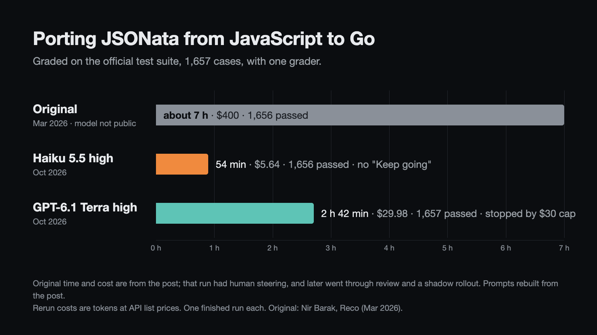

Two 2026 AI software builds, rerun on Haiku 5.5 and GPT‑6.1 Terra
October 2026. A JSON query language ported to Go and a Z80 emulator written in C, both published as AI coding results in early 2026. I gave the jobs to two cheap models and graded the results with the official tests in a container with no network.
Porting JSONata from JavaScript to Go

In March 2026 a data engineer at Reco wrote up how they rewrote JSONata in Go with AI: "some 7 hours" and $400 in tokens. Their company's Go services had been calling JavaScript JSONata pods over RPC, and the new library replaced them in production after review and a shadow rollout.
| Original (Mar 2026) | Haiku 5.5 high | GPT‑6.1 Terra high | |
|---|---|---|---|
| Official suite, public API and normal entry point (1,657 cases) | 1,656 | 1,656 | 1,657 |
| Same suite, second entry point (returns Go values) | not run | 1,656 | 1,654 |
| Time | about 7 h | 53 min 51 s | 2 h 42 min, stopped by my cap |
| Cost | $400 (their figure) | $5.64 | $29.98 (cap $30) |
| Prompts | the author steered "a few iterations" | plan, go, 0 "Keep going" | plan, go, 36 "Keep going" |
| Said it was done | yes | no | |
| Go code, without tests | 13,000 lines (their figure, may include tests) | 9,553 lines | 15,369 lines |
How they worked
Haiku wrote a plan, got "go", and worked until it reported everything done. Its one miss, a stack-depth test, is there because the library has no public option for the suite's depth limit. With a test-only hook into the internal setting its own test uses, it passes 1,657.
Terra stopped often to report progress. By its own count it reached a full pass during the 19th "Keep going", which alone ran 75 minutes. At the end of that prompt it stood at 1 h 56 min and $22.32. It kept working on the plan until my $30 cap ended the run, and it never said it was done. I graded the final code.
Things worth knowing
- The original's plan and prompts aren't public. I rebuilt them from the post, with the same approach (port the official tests, implement until they pass) and the same extras: two-tier evaluation, a streaming evaluator, a schema plan cache, metrics and a WASM build.
- The original had a production wrapper, an RPC fallback, review and a shadow rollout after the first build. These runs had none of that. I left the RPC fallback out of the task, because there's no such service here.
- The original's model isn't public. The post's image caption points to Cursor.
- The original's "1,778 tests" counts Go test group nodes too. The suite has 1,657 real cases at that commit. The original's one miss on my grader is a null-input case that its own runner treats differently.
- The models got the test suite and the JavaScript source, as a port normally would, with no internet, so only Go's standard library. The original used gjson.
- Passing the suite doesn't show full compatibility. By their own reports, Haiku uses Go's regex engine (no lookaround or backreferences) and orders strings by UTF-8 instead of UTF-16. Terra has a partial JavaScript regex engine and differs on unusual
$formatNumberpictures. Terra's 3 misses on the second entry point depend on key order, which Go maps lose. - I changed the grader three times after seeing results: applying the suite's time and depth limits, passing lone surrogates through, and adapting to how each library reports error codes and null. The original's score didn't change.
- Both libraries pass
go vet,go test -raceand a WASM build with no network. Neither log shows reads of the original library, and neither has case-specific code outside its tests. Each model wrote its own benchmarks on its own inputs, so I don't compare speed.
Writing a Z80 emulator in C
In February 2026 the creator of Redis had Opus 4.6 in Claude Code write a Z80 CPU emulator: "20 or 30 minutes", prompted "zero times" during the work, passing ZEXDOC and ZEXALL, the standard instruction exercisers for this chip. It was the first step of a longer post, and the later ZX Spectrum work had more human help. I only reran the CPU step.
| Opus 4.6 (Feb 2026) | Haiku 5.5 high | Terra, one prompt | Terra, with "Keep going" | |
|---|---|---|---|---|
| ZEXDOC | 67/67 | 67/67 | unfinished, not run | 67/67 |
| ZEXALL | 67/67 | 67/67 | unfinished, not run | 67/67 |
| Time | 20 or 30 min | 25 min 47 s | 90 s, then stopped | 16 min 52 s to first pass |
| Prompts | 1 | 1 | 1 | 1 + 11 "Keep going" to first pass |
| Cost | not published (Claude Max) | $0.86 | $0.08 | $0.91 to first pass |
Things worth knowing
- The original spec and prompt aren't public. I rebuilt them from the post and used the reference notes and test programs from the original repository. The grader is my own small CP/M harness around each model's CPU code. It gives the original emulator 67 OK and 0 errors on both programs.
- Terra's first run stopped unfinished, despite the rule "Never stop for prompting". The second run started from an empty folder.
- My stop rule missed Terra's report at the 11th "Keep going", so it got more prompts up to 34, then I stopped it by hand. That whole run cost $3.58. I graded only the final code, so the pass at the 11th prompt comes from Terra's own command output.
- Z80 emulators and these test programs are widely published, so the models know them from training.
How this was run
- Haiku ran in Claude Code (
claude-haiku-5-5, effort high). Terra ran in Codex CLI (gpt-6.1-terra, reasoning high). Neither had internet access or a stronger model as a helper. - Each score here comes from one finished run per setup. That's enough to see what happened, not to rank models.
- The Haiku runs reported here had my personal Claude rules file, memory and other runs' work blocked. Earlier Haiku tries had the rules file loaded. The JSONata ones were stopped before finishing and aren't counted. The Z80 one finished and also scored 67/67 ($0.72, 16 min 46 s), and I report the later run instead.
- Costs are the tokens each run used at the provider's API list price. I ran them on subscriptions, so nothing was charged. The $400 is from the original post.